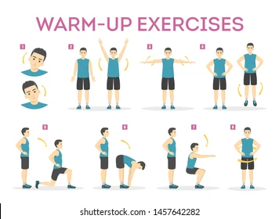
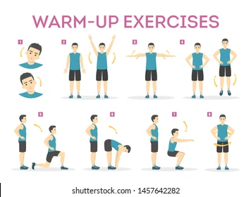

.jpg)
The final step to recovering isn't really recovery at all. It is prevention. Once your injury has healed and you're ready to get back in the game, you must think about different methods to prevent a re-injury from happening in the future. Chances are when you finally come back to your sport the newly recovered area will be quite weak due to lack of use, making it a huge liability. This is why you should always take the extra step to protect this part of your body even if it may seem unnecessary.
Two preventative measures that you should add to your routine are wrapping the previously injured area before heavy use and regularly doing exercises that target the area.
Even if you are no longer injured and you no longer feel pain, wrapping the area before a game or match is a great way to prevent re-injuries. Taking this extra step before a practice or game will lower the risk of another injury and might even make you feel more confident to use it.
Working out the muscles around this part of the body is crucial. It is the only way you will rebuild your strength and get the area back to where it was before. Continuing these movements daily will even make it stronger. This is how you will find your way back to your game without fear.
.jpg)
 
